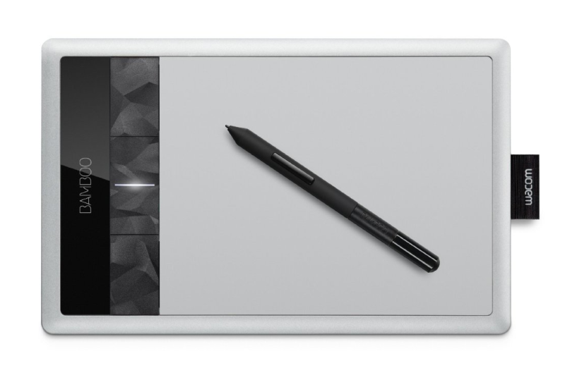

Une manière ludique d'apprendre à utiliser une tablette graphique.
BESOIN
Lorsqu'un utilisateur vient d'acquérir une tablette graphique, il fait face à un probleme lors de son utilisation. En effet, nous avons l'habitude de voir ce qu'on déssine et c'est contre intuitif de dessiner sur un support et voir le dessin sur un autre.

SOLUTION PROPOSÉE
Le jeu permet de s'habituer à utiliser une tablette en synchronisant nos gestes sur celle-ci avec ce qu'on voit sur l'écran, le tout de manière ludique.
Comment avons nous défini cela ?
INTERVIEW
L'interview s'est déroulée avec 3 types de personnes différentes :
Des informaticiens confirmés
Des utlisateurs occasionnels d'ordinateur, seulement capables de réaliser des tâches basiques de bureautique et surfer sur le web
Des utilisateurs réguliers d'ordinateurs, assez polyvalents sur les tâches quotidiennes qui nécessitent un ordinateur
Toutes ces personnes n'ont jamais utilisé de tablette graphique. On leur a donc demandé de dessiner simplement des formes(cercle, carré, cube etc...) sur une feuille. Tous les utilisateurs ont donc réussi sans aucune difficultés.
Ensuite, On leur a demandé de refaire ces même formes sur un logiciel de dessin en utilisant la tablette graphique. Le résultat est le même pour tous, l'action est laborieuse, les dessins ne sont pas bien réalisés, les formes sont disproportionnées et ce, après plusieurs tentatives. De plus, les personnes interviewées n'ont pas eu envie d'aller plus loin et de réessayer pour tenter de s'améliorer.
PROBLÈME DÉTECTÉ :
Il est laborieux de dessiner une forme alors qu'ils n'ont aucun soucis sur feuille physique. De plus, ils n'ont aucune volonté de s'impliquer et laissent tomber facilement. On remarque notamment que les difficultés proviennent du fait de ne pas voir ce qu'on dessine directement sur la tablette (obligation de regarder l'écran et donc de ne pas regarder son stylet, ce qui est perturbant). Le second problème est que l'utilisateur n'arrive pas à projeter l'espace disponible de la tablette avec ce à quoi ça correspond sur l'écran.
IDÉE DE SOLUTION :
Faire progresser l'utilisateur avec ce nouveau périphérique via des jeux simples. Ainsi, il va se sentir impliqué, amusé et voudra recommencer. A force de jouer, il sera plus à l'aise avec la tablette graphique.
Nous avons cherché deux jeux impliquant la représentation de l'espace disponible (Tap Tablet) pour l'un et la synchronisation entre la main et et ce qu'on regarde sur l'écran pour l'autre(Tablet Pong).
RETOUR UTILISATEUR
Pour la plupart, le prototype montré était satisfaisant (voir storyboard) : l'utilisateur est intéréssé, invité à essayer, réessayer, progresser. Cependant, une petite partie continuait a perdre rapidement de l'interêt pour cette activité.
AMÉLIORATION AJOUTÉE
Nous avons décidé d'ajouter la posssibilité de jouer à deux. En effet l'aspect multijoueur génère une sorte de compétition et maintient l'engouement pour cette activté et donc rendre l'apprentissage plus agréable.
DESCRIPTION DU JEU ET DE L'INTERACTION
Le jeu s'ouvre sur un menu avec le choix de lancer Tap Tablet, Pong Tablet (un joueur) ou Pong Tablet (Deux joueurs).
Tap Tablet
Tap Tablet est un mini-jeu destiné à la prise en main de la tablette graphique.
Le jeu consiste en un écran sombre où vont apparaître à intervalles réguliers des points de couleur vive. Le joueur disposera d’un créneau de quelques secondes pour cliquer sur le point avant qu’il ne disparaisse. Un compteur affichant le nombre de réussites et le nombre total de points sera affiché.
L'interaction est donc simple, on utilise son doigt (ou le sylet de la tablette) et on appuie simplement au bon endroit. Le but est de pouvoir se répresenter l'espace disponible et gagner en précision car en voyant ou se situe le point sur l'écran, on va chercher à se l'imaginer sur la tablette pour appuyer au bon endroit. C'est un bon exercice de visualisation et de précision avec le stylet.
Pong Tablet
Pong Tablet est la reprise du tout premier jeux video Pong adapté pour être utilisé via tablette graphique. En effet, le jeu se déroulera sur l'écran de l'ordinateur mais le seul moyen de déplacer les barres pour renvoyer la barre est de slider du bon côté de la tablette.
Pour ce jeu, l'interaction peut se faire au doigt ou au stylet. Il faudra s'imaginer la position d'une des deux barres sur la tablette, appuyer dessus et la déplacer de haut en bas. Lorsqu'on réalise le déplacement, on le voit en temps réel sur l'écran. Afin de ne pas laisser la balle passer, il sera donc nécessaire de regarder l'écran plutôt que la tablette et donc de s'habituer à réaliser des mouvements sur la tablette sans regarder ce que l'on fait sur celle-ci. On gagnera ainsi en synchronisation entre ce que l'on voit et ce que fait la main et ainsi se débarasser de l'habitude de forcément regarder notre mouvement sur la tablette au lieu de regarder l'écran.
Le jeu peut se lancer en deux modes :
Le mode "Un joueur" (gaucher ou droitier) : le joueur ne jouera qu'un côté (il ne pourra manipuler qu'une seule barre) et l'autre côté sera un mur. Ainsi le joueur ne peut pas gagner mais cherchera à augmenter son score au fil des parties. Cela nous semble être un bon compromis pour palier au fait de jouer tout seul et de pouvoir progresser tout en maintenant un engouement pour le jeu, passant donc par la volonté d'augmenter son score.
Le mode "Deux joueurs" : la version standard de pong opposant deux joueurs et le score d'un joueur s'incrémente lorsque celui-ci arrive à faire passer la balle derrière la barre de son adversaire. Ce mode peut se jouer avec deux stylets mais comme chaque tablette ne possède pas plusieurs stylets à l'achat (et que cela représente un certain coût pour l'utilisateur), il sera possible de jouer avec le doigt.
OUTILS DE DEVELOPPEMENT
Ce projet sera réalisé en Java Swing avec l'aide de certaines librairies externes :
JTablet : gestion de la tablette
MT4j / Sparsh-ui : permet de gérer le multi-touch nécessaire pour le mode "Deux joueurs" de Pong Tablet.
JPen : gestion du stylet
Pour assurer une compatibilité de l'application avec tous les systèmes d'exploitations, nous avons opté pour des librairies multi-plateformes. De plus, nous n'avons utilisé aucune librairie/plugin provenant d'une marque spécifique de tablette graphique afin que n'importe quel matériel puisse fonctionner et ne pas se limiter à/privilégier une marque particulière.
Ainsi, l'application doit marcher sur tout ordinateur et toute tablette, indépendamment des spécifications de ceux-ci.